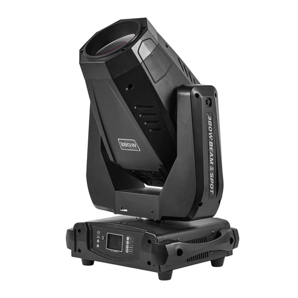
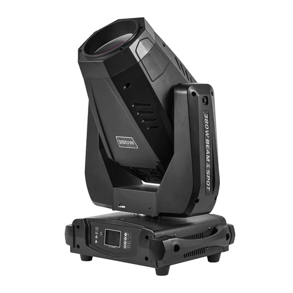
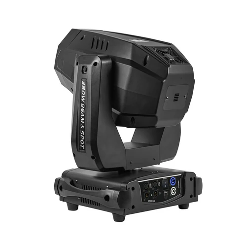
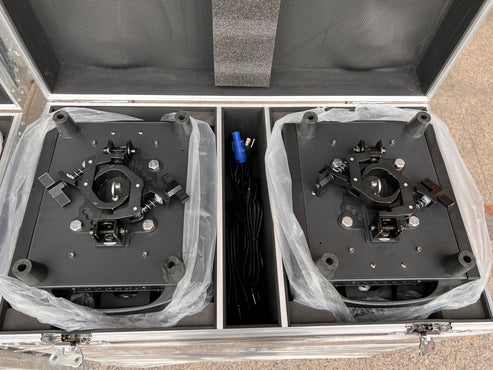
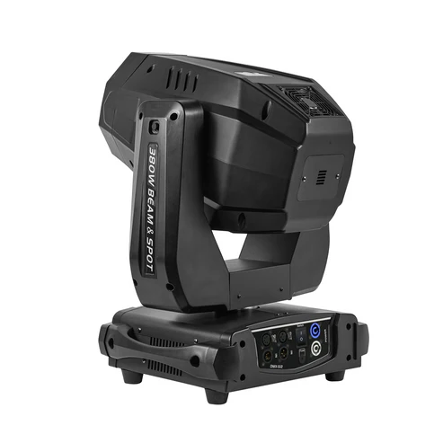
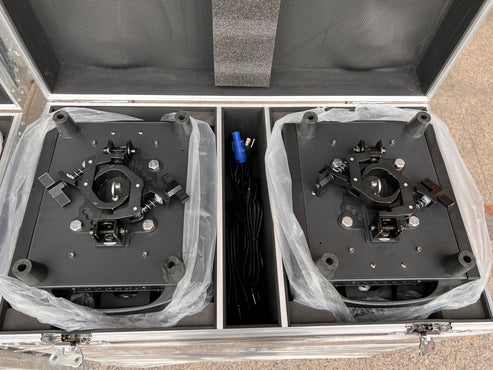

 



20R-380W
Technical parameters: 1. input voltage: AC 200~240V, 50/60Hz (AC100~120V, 50/60Hz optional) 2. power: 470W 3. lamp source: Osarm Siruis HRI 371W 4. style: pattern, dyeing, light beam three in one lamp 5. color temperature can reach 8000K 6. color plate: a color plate, with 13 color plates and white light. 7. pattern plate: two pattern plates, fixed pattern plates, 13 patterns + white light, 9 rotation patterns. Rotating pattern plate diameter: 15.4mm effective inner diameter: 13mm 8. effect wheel: two rotatable prisms, a circle eight prism, a straight line six prism, (prism optional). 9. independent atomization function. 10 - 100% mechanical dimming, supporting mechanical strobe and adjustable speed stroboscopic effect, supporting stroboscopic macro function. 11. lens group optical system, electric focusing 12. beam angle: 0-20 degree, linear adjustable 13. the magnetic reset system is more accurate than the traditional photoelectric reset, and it can be automatically retrieved after accidental malfunction. 14. level 540 degree, resolution 8Bit/16Bit, vertical 270 degree, resolution 8Bit/16Bit 15.DMX channel: 16CH/22CH 16. control panel: 2.8 inch color LCD display, can be inverted 180 degrees display. 17. cooling system, built-in convection fan, with overheating protection function. 18.IP protection level: IP20 19. high efficiency and reliable switching power supply